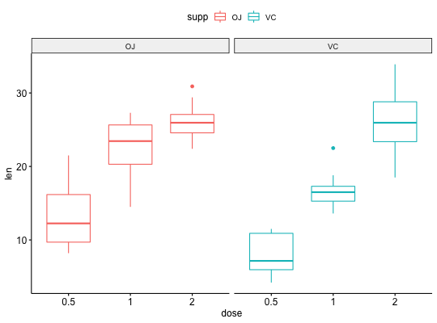

Facet a ggplot into Multiple Panels
Create multi-panel plots of a data set grouped by one or two
grouping variables. Wrapper around facet_wrap
facet(p, facet.by, nrow = NULL, ncol = NULL, scales = "fixed", short.panel.labs = TRUE, panel.labs = NULL, panel.labs.background = list(color = NULL, fill = NULL), panel.labs.font = list(face = NULL, color = NULL, size = NULL, angle = NULL), panel.labs.font.x = panel.labs.font, panel.labs.font.y = panel.labs.font, ...)
Arguments
- p
- a ggplot
- facet.by
- character vector, of length 1 or 2, specifying grouping variables for faceting the plot into multiple panels. Should be in the data.
- nrow, ncol
- Number of rows and columns in the pannel. Used only when the data is faceted by one grouping variable.
- scales
- should axis scales of panels be fixed ("fixed", the default), free ("free"), or free in one dimension ("free_x", "free_y").
- short.panel.labs
- logical value. Default is TRUE. If TRUE, create short labels for panels by omitting variable names; in other words panels will be labelled only by variable grouping levels.
- panel.labs
- a list of one or two character vectors to modify facet panel labels. For example, panel.labs = list(sex = c("Male", "Female")) specifies the labels for the "sex" variable. For two grouping variables, you can use for example panel.labs = list(sex = c("Male", "Female"), rx = c("Obs", "Lev", "Lev2") ).
- panel.labs.background
- a list to customize the background of panel
labels. Should contain the combination of the following elements:
-
color, linetype, size: background line color, type and size -
fill: background fill color.
-
- panel.labs.font
- a list of aestheics indicating the size (e.g.: 14), the face/style (e.g.: "plain", "bold", "italic", "bold.italic") and the color (e.g.: "red") and the orientation angle (e.g.: 45) of panel labels.
- panel.labs.font.x, panel.labs.font.y
- same as panel.labs.font but for only x and y direction, respectively.
- ...
- not used
Examples
facet(p, facet.by = "supp")